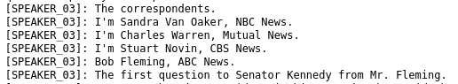

Transcribing Audio and Video files with Automated Speech Recognition
| Author(s) |
|
| Tester(s) |
|
| Reviewers |
|
OverviewQuestions:
Objectives:
How can you convert audio and video files into written text?
How can you extract passages from certain speakers for further analysis?
Use WhisperX in Galaxy to convert your media to machine-readable text.
Use Regular Expressions (RegEx) to extract meaningful passages and clean the text.
Time estimation: 1 hourLevel: Introductory IntroductorySupporting Materials:
- Datasets
- Workflows
- galaxy-history-answer Answer Histories
- FAQs
- instances Available on these Galaxies
Published: Apr 8, 2026Last modification: Apr 8, 2026License: Tutorial Content is licensed under Creative Commons Attribution 4.0 International License. The GTN Framework is licensed under MITpurl PURL: https://gxy.io/GTN:T00577version Revision: 1
Audio and media files are a rich source in the social sciences and the humanities. One example is oral history, in which historians interview contemporary witnesses to access information beyond written sources. How History is Made 2022 gives an introduction to the topic and lays out potential challenges. But once you have your audio or audiovisual material, how can you make it accessible for structured analysis? You will often need to transcribe the media content into machine-readable text first. This is a task Galaxy can help with. The platform contains several tools for Automatic Speech Recognition (ASR). From uploading and converting to suitable file types to transcriptions and post-processing, Galaxy has you covered.
This tutorial aims to make the audio track of a video machine-readable for further processing. It is the pre-processing step to get you started. Once you have covered this, you can further analyse your material more thoroughly. This step will not be covered in this tutorial.
We use a video of the 1960 United States presidential debate between John F. Kennedy and Richard Nixon. It was broadcast on television, and the recording is now in the public domain. We will use WhisperX to transcribe the material. The advantage of WhisperX over Whisper , another tool available on Galaxy, is its speaker diarization. This means the tool recognises different speakers and (tries to) allocate the text passages accordingly. To make it easier to distinguish who said what, we later replace the tool’s naming convention, for example, “SPEAKER_00,” with the person’s name. Then we extract passages from Kennedy’s and Nixon’s speeches for further analysis.
AgendaIn this tutorial, we will cover:
Upload your Files
You can upload data in various ways. Here are some examples:
Hands On: Data Upload
Create a new history for this tutorial
To create a new history simply click the new-history icon at the top of the history panel:
Import the files from the shared data library (
GTN - Material->digital-humanities->Transcribing Audio and Video files with Automated Speech Recognition) or from Zenodo:https://zenodo.org/records/17949386/files/1960_kennedy-nixon_1.mp4As an alternative to uploading the data from a URL or your computer, the files may also have been made available from a shared data library:
- Go into Libraries (left panel)
- Navigate to the correct folder as indicated by your instructor.
- On most Galaxies tutorial data will be provided in a folder named GTN - Material –> Topic Name -> Tutorial Name.
- Select the desired files
- Click on Add to History galaxy-dropdown near the top and select as Datasets from the dropdown menu
In the pop-up window, choose
- “Select history”: the history you want to import the data to (or create a new one)
- Click on Import
- Copy the link location
Click galaxy-upload Upload at the top of the activity panel
- Select galaxy-wf-edit Paste/Fetch Data
Paste the link(s) into the text field
Press Start
- Close the window
Check the Datatype
- Click on the galaxy-pencil pencil icon for the dataset to edit its attributes
- In the central panel, click galaxy-chart-select-data Datatypes tab on the top
- In the galaxy-chart-select-data Assign Datatype, select
datatypesfrom “New Type” dropdown
- Tip: you can start typing the datatype into the field to filter the dropdown menu
- Click the Save button

We upload one file: the video of the presidential debate we want to transcribe.
Once you click start, your upload should begin. It will turn green once it is done. If you follow this workflow with one of your own files, make sure to check the file’s data type. If your file’s format is not supported as input by WhisperX or Whisper , you can use FFMPEG to convert it to a format that the tool of your choice supports. You can check which file types a tool supports by clicking on the tool of your choice, for example, WhisperX , and clicking on “accepted formats” below the upload section, where you choose the tool input.
Get to know your Input
You should now have one item in your history. But how can you watch the video? If you try to access it via the view option, a download button pops up. But you do not need to download the file - you can watch it directly within Galaxy:
Hands On: Watch the Video
- In the Activity bar, click on Visualisations galaxy-visualise.
- Search for Media Player and click on it.
- In the drop-down menu, select
1960_kennedy-nixon_1.mp4. A black screen appears.- Click on the Play icon in the middle and take a look at the video.
Question
- How long is the video?
- What is the colour of the video?
- 16:11
- The video is in black and white.
This video shows the first televised presidential debate held between Richard Nixon and John F. Kennedy in 1960. Druckman 2003 looks at the media history of this document, in case you want to know more about it. We will not analyse its aesthetics or importance, but focus on the spoken words. You can use Galaxy for automated speech recognition of the video.
Transcribe your Media File(s)
Galaxy has different tools to transcribe your media files: Whisper and WhisperX . If you want to transcribe a monologue or do not care about who said what, you can choose Whisper. To differentiate between various speakers, use WhisperX instead. This is what we will do in this tutorial to create our video transcript.
Please make sure to comply with your local copyright and privacy laws regarding recordings and sensitive data, if applicable. You might also need to obtain informed consent before using this tool on some files. Read more, for example, on the regulations in Germany, here.
Hands On: Create the Video Transcription
- Speech to Text with Diarization ( Galaxy version 3.4.2+galaxy1) with the following parameters:
- param-file “Select audio or video file”:
output(Input dataset)- “Speech to Text Model”:
Medium (~2x faster than the large model)- “Language”:
English- “Output Format”:
TextComment: Choose a suitable modelThere are several models to choose from. This overview can help you decide. The bigger the model, the higher the accuracy, but also the greater the computational time for transcription and its carbon footprint. Despite the tool’s option to auto-detect the language, we suggest selecting a language if you can. This saves computing resources. The
Mediummodel selected here showed the best results for this recording. The large model was too sensitive and returned many errors, while the smaller ones were not accurate enough. Files with different qualities and in other languages may differ. For those, you can check Eamonn Bell’s workflow on comparing Whisper Models or build your own for WhisperX based on this.
Now, take a look at the finished transcript as soon as the job turns green.
Question
- How many different speakers does your transcript show?
- There are 4 different speakers, named
SPEAKER_00throughSPEAKER_03.
Your transcript differs slightly because Whisper and WhisperX are not deterministic, meaning their outputs are not standardised. You can run it several times and will get a slightly different output each time. Another thing to be aware of is small errors that can occur in speaker diarization. The longer a person speaks on the recording, the easier it is for WhisperX to allocate a speaker. If someone speaks only a single sentence in the whole recording, it might mean it is not recognised as a different speaker. As a result, some passages can be wrongly allocated, as happened in the last bit of the recording:

Open image in new tabThe above screenshot shows an extract at the end of the transcript. You can also watch that part of the recording in the media player starting at 14:35. It is the moment when correspondents and reporters introduce themselves in one line each. The video clearly shows four different journalists speaking. WhisperX, however, names them all SPEAKER_03 and fails to distinguish between them at this point. As we are more interested in the presidential candidates than the journalists, this poses no issue to us. But keep this in mind for your own transcripts.
It is cumbersome to keep track of who is who in this version of the transcript. We will make it more obvious by renaming the speakers with their given names with the help of Regular Expressions (RegEx).
Allocate the Speakers by using Regular Expressions
We will start by allocating the moderator.
In this example transcript, the moderator was recorded as SPEAKER_03.
This might differ slightly from your text.
If you want to make sure, you can either listen to the video and check the transcript, or you can search for who speaks the first line in the transcript and use this alias if it differs from SPEAKER_03, and replace it with Moderator.
Allocating the Moderator
Hands On: Allocating the Moderator
- Replace ( Galaxy version 9.5+galaxy2) with the following parameters:
- param-file “File to process”:
output_txt(output of Speech to Text with Diarization tool)- In “Find and Replace”:
- param-repeat “Insert Find and Replace”
- “Find pattern”:
SPEAKER_03- “Replace with”:
Moderator- “Find and Replace text in”:
entire lineRegular expressions are a standardized way of describing patterns in textual data. They can be extremely useful for tasks such as finding and replacing data. They can be a bit tricky to master, but learning even just a few of the basics can help you get the most out of Galaxy.
Finding
Below are just a few examples of basic expressions:
Regular expression Matches abcan occurrence of abcwithin your data(abc|def)abcordef[abc]a single character which is either a,b, orc[^abc]a character that is NOT a,b, norc[a-z]any lowercase letter [a-zA-Z]any letter (upper or lower case) [0-9]numbers 0-9 \dany digit (same as [0-9])\Dany non-digit character \wany alphanumeric character \Wany non-alphanumeric character \sany whitespace \Sany non-whitespace character .any character \.literal . (period) {x,y}between x and y repetitions ^the beginning of the line $the end of the line Note: you see that characters such as
*,?,.,+etc have a special meaning in a regular expression. If you want to match on those characters, you can escape them with a backslash. So\?matches the question mark character exactly.Examples
Regular expression matches \d{4}4 digits (e.g. a year) chr\d{1,2}chrfollowed by 1 or 2 digits.*abc$anything with abcat the end of the line^$empty line ^>.*Line starting with >(e.g. Fasta header)^[^>].*Line not starting with >(e.g. Fasta sequence)Replacing
Sometimes you need to capture the exact value you matched on, in order to use it in your replacement, we do this using capture groups
(...), which we can refer to using\1,\2etc for the first and second captured values. If you want to refer to the whole match, use&.
Regular expression Input Captures chr(\d{1,2})chr14\1 = 14(\d{2}) July (\d{4})24 July 1984 \1 = 24,\2 = 1984An expression like
s/find/replacement/gindicates a replacement expression, this will search (s) for any occurrence offind, and replace it withreplacement. It will do this globally (g) which means it doesn’t stop after the first match.Example:
s/chr(\d{1,2})/CHR\1/gwill replacechr14withCHR14etc.You can also use replacement modifier such as convert to lower case
\Lor upper case\U. Example:s/.*/\U&/gwill convert the whole text to upper case.Note: In Galaxy, you are often asked to provide the find and replacement expressions separately, so you don’t have to use the
s/../../gstructure.There is a lot more you can do with regular expressions, and there are a few different flavours in different tools/programming languages, but these are the most important basics that will already allow you to do many of the tasks you might need in your analysis.
Tip: RegexOne is a nice interactive tutorial to learn the basics of regular expressions.
Tip: Regex101.com is a great resource for interactively testing and constructing your regular expressions, it even provides an explanation of a regular expression if you provide one.
Tip: Cyrilex is a visual regular expression tester.
Rename your output file (once it is green) to
Transcribed_Modto signal that this text was transcribed and includes the allocated moderator.
- Click on the galaxy-pencil pencil icon for the dataset to edit its attributes
- In the central panel, change the Name field
- Click the Save button
The tool goes through the text line by line, finds passages that match SPEAKER_03, and replaces them with Moderator.
When the dataset turns green, we can check whether our renaming worked. This step makes it easier to point out when the moderator spoke.
We will repeat this step three more times to allocate all the speakers mentioned in the transcript. Always use the latest text file to ensure we end up with a single text file where all speakers are clearly distinguished.
Allocating Kennedy
We are continuing in chronological order, so the next speaker after the moderator is Kennedy.
In the example, his lines are tagged with SPEAKER_00.
We use this (or the name used in your text) and replace it with Kennedy by redoing this step.
Hands On: Allocating Kennedy
- Replace ( Galaxy version 9.5+galaxy2) with the following parameters:
- param-file “File to process”:
Transcribed_Mod(output of Replace tool)- In “Find and Replace”:
- param-repeat “Insert Find and Replace”
- “Find pattern”:
SPEAKER_00- “Replace with”:
Kennedy- “Find and Replace text in”:
entire line- Rename your output file to
Transcribed_Mod_Ken.
The text should now also clearly indicate which lines Kennedy spoke. We will continue to allocate Nixon’s passages as well.
Allocating Nixon
Nixon’s first line is: Senator Kennedy. You can search for it to see if it was also attributed to SPEAKER_01, as in this example.
If not, use the respective name as the Find pattern in the tool instead.
Hands On: Allocating Nixon
- Replace ( Galaxy version 9.5+galaxy2) with the following parameters:
- param-file “File to process”:
Transcribed_Mod_Ken(output of Replace tool)- In “Find and Replace”:
- param-repeat “Insert Find and Replace”
- “Find pattern”:
SPEAKER_01- “Replace with”:
Nixon- “Find and Replace text in”:
entire line- Rename your output file to
Transcribed_Mod_Ken_Nix.
Allocating Fleming
The only journalist clearly named in this example was Bob Fleming.
He probably spoke a longer passage that clearly distinguished him from the others.
We also allocate his passage, as before.
His first line is: Senator, the Vice President in his campaign has said that you are naive and at times immature.
Hands On: Allocating Fleming
- Replace ( Galaxy version 9.5+galaxy2) with the following parameters:
- param-file “File to process”:
Transcribed_Mod_Ken_Nix(output of Replace tool)- In “Find and Replace”:
- param-repeat “Insert Find and Replace”
- “Find pattern”:
SPEAKER_02- “Replace with”:
Fleming- “Find and Replace text in”:
entire line- Rename your output file to
Transcribed_all.
Congratulations, now all speakers are allocated.
When we compare this file with the initial transcript, all speakers are now allocated, making it easier to see who spoke what.
There should be no more passages saying SPEAKER_xx in your text.
This may be all you need, but you may want to go further and work only with selected text.
In this example, we want to get a sense of the topics Nixon and Kennedy addressed during their time on screen.
Therefore, we will first select all passages allocated to them and then clean them.
Select the Presidential Candidate’s Passages
In this step, we will use the Transcribed_all file to select only the lines from Nixon and Kennedy that are most relevant to this example.
Select Nixon’s Passages
First, we search the document for mentions of Richard Nixon, which are now marked as [Nixon].
Despite the tool’s name, Search, it actually selects the lines that fit a certain expression, in our case, the speaker allocation for Nixon.
Hands On: Search Nixon's passages
- Search in textfiles ( Galaxy version 9.5+galaxy2) with the following parameters:
- param-file “Select lines from”:
Transcribed_all(output of Replace tool)- “Regular Expression”:
\[Nixon\]Rename your output file to
Nixon_raw.Comment: Using RegEx hereAs the input is set as another Regular Expression, we need to “escape” the brackets by putting
\in front of them to make the selection work.
Question
- How many lines were selected for Nixon?
- 83
Select Kennedy’s Passages
We will redo this step to extract the relevant parts of John F. Kennedy’s speech.
Hands On: Search Kennedy's passages
- Search in textfiles ( Galaxy version 9.5+galaxy2) with the following parameters:
- param-file “Select lines from”:
Transcribed_all(output of Replace tool)- “Regular Expression”:
\[Kennedy\]Rename your output file to
Kennedy_raw.Comment: TroubleshootingMake sure to select
Transcribed_allas your input. If you selectNixon_rawinstead, your output will be empty as that file no longer contains any passages spoken by Kennedy.
This output might already suffice, depending on what you want to do with the texts. If you want to use it further, some text cleaning might be in order.
Clean the Presidential Candidate’s Passages
If you want to create a Wordcloud, for example, the information on who spoke what might be redundant and falsify your visualisation. Therefore, we remove this passage for both speakers.
Clean Nixon’s Passages
Since all of the passages in this file are now from Nixon, the allocation saying [Nixon]: at the beginning of each line is redundant.
We remove it in the next step.
Hands On: Clean Nixon's passages
- Replace ( Galaxy version 9.5+galaxy2) with the following parameters:
- param-file “File to process”:
Nixon_raw(output of Search in textfiles tool)- In “Find and Replace”:
- param-repeat “Insert Find and Replace”
- “Find pattern”:
[Nixon]:- “Find and Replace text in”:
entire lineRename your output file to
Nixon_cleaned.Comment: TroubleshootingMake sure to add the space after the colon to clean the text properly. If you forget, each line will start with a space!
The result is the transcript of the text Nixon spoke during the debate. You can use it for further in-depth analysis or visualise it. To get the same for Kennedy, we have to redo the same step on Kennedy’s text.
Clean Kennedy’s Passages
Hands On: Clean Kennedy's passages
- Replace ( Galaxy version 9.5+galaxy2) with the following parameters:
- param-file “File to process”:
Kennedy_raw(output of Search in textfiles tool)- In “Find and Replace”:
- param-repeat “Insert Find and Replace”
- “Find pattern”:
[Kennedy]:- “Find and Replace text in”:
entire lineRename your output file to
Kennedy_cleaned.Comment: TroubleshootingAlso here, remember to add the space after the colon. It is easy to forget.
Congratulation! You should now have two cleaned texts: one with Kennedy’s text and one with Nixon’s text. If you want, you can use other tools in Galaxy for further analysis or visualisation. The Word cloud , for example, can show you what the most frequent words in the respective speeches were.
Conclusion
With the example of the first televised presidential debate of Richard Nixon and John F. Kennedy in 1960, this tutorial introduced you to automated speech recognition using Galaxy. We introduced several tools to transcribe your audio and video files into machine-readable text. Building on this, we explored how using Regular Expressions can help us clean the automated text and extract specific passages, in our case, the lines from Nixon and Kennedy, respectively.
Which audio and video files do you want to test this on?
You've Finished the Tutorial
Key points
Converting media files into text in an automated way makes more material accessible for further research.
Galaxy can help you do this with various tools.
Frequently Asked Questions
Have questions about this tutorial? Have a look at the available FAQ pages and support channelsReferences
- Druckman, J. N., 2003 The Power of Television Images: The First Kennedy-Nixon Debate Revisited. The Journal of Politics 65: 559–571. 10.1111/1468-2508.t01-1-00015
- How History is Made, 2022 Mavs Open Press. https://uta.pressbooks.pub/historicalresearch/ ISBN: 9781648160066
Feedback
Did you use this material as an instructor? Feel free to give us feedback on how it went.
Did you use this material as a learner or student? Click the form below to leave feedback.

Citing this Tutorial
- Daniela Schneider, Transcribing Audio and Video files with Automated Speech Recognition (Galaxy Training Materials). https://training.galaxyproject.org/training-material/topics/digital-humanities/tutorials/Whisper_speech_recognition/tutorial.html Online; accessed TODAY
- Hiltemann, Saskia, Rasche, Helena et al., 2023 Galaxy Training: A Powerful Framework for Teaching! PLOS Computational Biology 10.1371/journal.pcbi.1010752
- Batut et al., 2018 Community-Driven Data Analysis Training for Biology Cell Systems 10.1016/j.cels.2018.05.012
@misc{digital-humanities-Whisper_speech_recognition, author = "Daniela Schneider", title = "Transcribing Audio and Video files with Automated Speech Recognition (Galaxy Training Materials)", year = "", month = "", day = "", url = "\url{https://training.galaxyproject.org/training-material/topics/digital-humanities/tutorials/Whisper_speech_recognition/tutorial.html}", note = "[Online; accessed TODAY]" } @article{Hiltemann_2023, doi = {10.1371/journal.pcbi.1010752}, url = {https://doi.org/10.1371%2Fjournal.pcbi.1010752}, year = 2023, month = {jan}, publisher = {Public Library of Science ({PLoS})}, volume = {19}, number = {1}, pages = {e1010752}, author = {Saskia Hiltemann and Helena Rasche and Simon Gladman and Hans-Rudolf Hotz and Delphine Larivi{\`{e}}re and Daniel Blankenberg and Pratik D. Jagtap and Thomas Wollmann and Anthony Bretaudeau and Nadia Gou{\'{e}} and Timothy J. Griffin and Coline Royaux and Yvan Le Bras and Subina Mehta and Anna Syme and Frederik Coppens and Bert Droesbeke and Nicola Soranzo and Wendi Bacon and Fotis Psomopoulos and Crist{\'{o}}bal Gallardo-Alba and John Davis and Melanie Christine Föll and Matthias Fahrner and Maria A. Doyle and Beatriz Serrano-Solano and Anne Claire Fouilloux and Peter van Heusden and Wolfgang Maier and Dave Clements and Florian Heyl and Björn Grüning and B{\'{e}}r{\'{e}}nice Batut and}, editor = {Francis Ouellette}, title = {Galaxy Training: A powerful framework for teaching!}, journal = {PLoS Comput Biol} }
Funding
These individuals or organisations provided funding support for the development of this resource
Congratulations on successfully completing this tutorial!


You can use Ephemeris's
shed-tools installcommand to install the tools used in this tutorial.shed-tools install [-g GALAXY] [-a API_KEY] -t <(curl https://training.galaxyproject.org/training-material/api/topics/digital-humanities/tutorials/Whisper_speech_recognition/tutorial.json | jq .admin_install_yaml -r)Alternatively you can copy and paste the following YAML
--- install_tool_dependencies: true install_repository_dependencies: true install_resolver_dependencies: true tools: - name: text_processing owner: bgruening revisions: c41d78ae5fee tool_panel_section_label: Text Manipulation tool_shed_url: https://toolshed.g2.bx.psu.edu/ - name: text_processing owner: bgruening revisions: c41d78ae5fee tool_panel_section_label: Text Manipulation tool_shed_url: https://toolshed.g2.bx.psu.edu/ - name: whisperx owner: bgruening revisions: 01b0fcc50e74 tool_panel_section_label: Machine Learning tool_shed_url: https://toolshed.g2.bx.psu.edu/